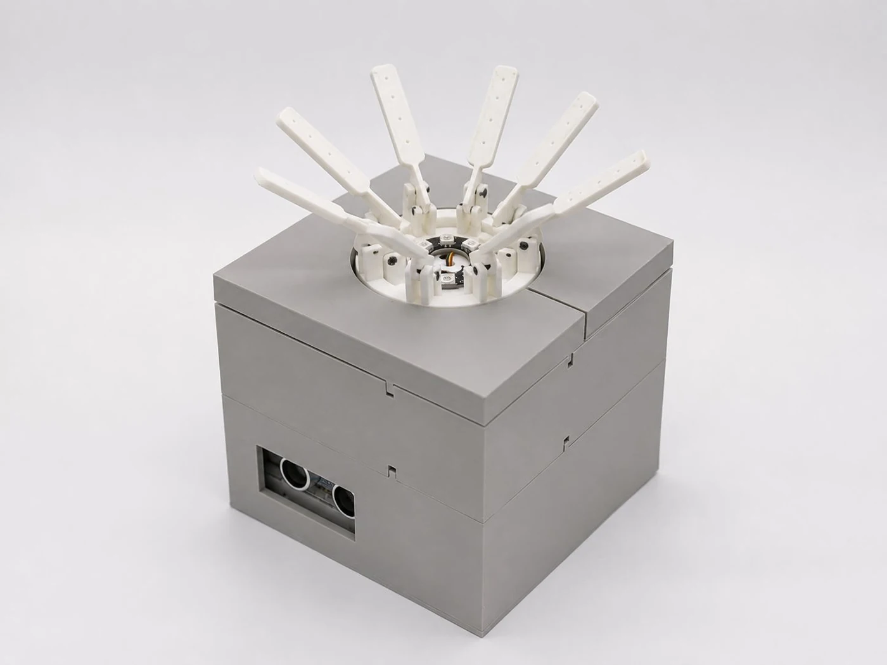
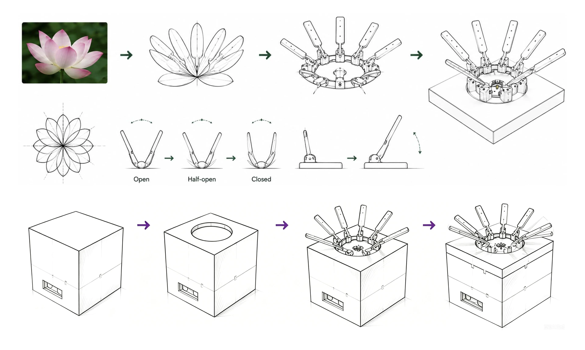
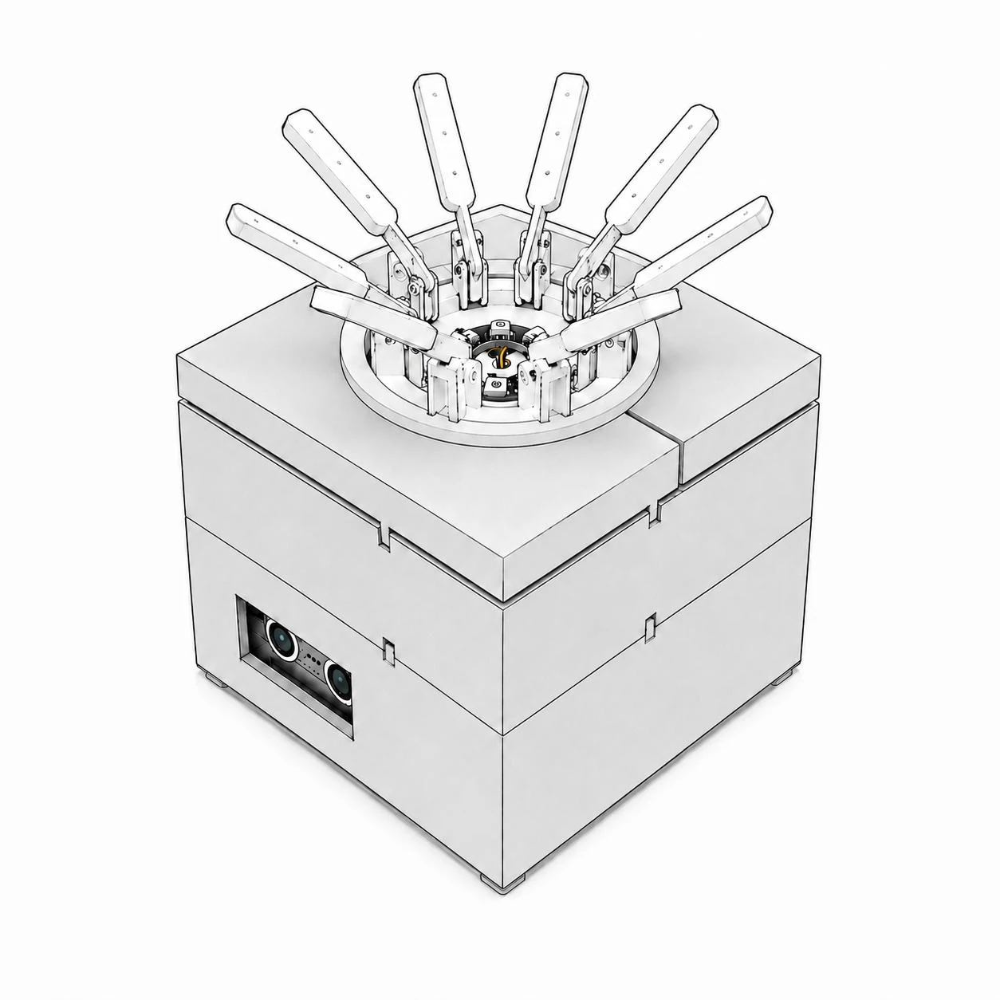
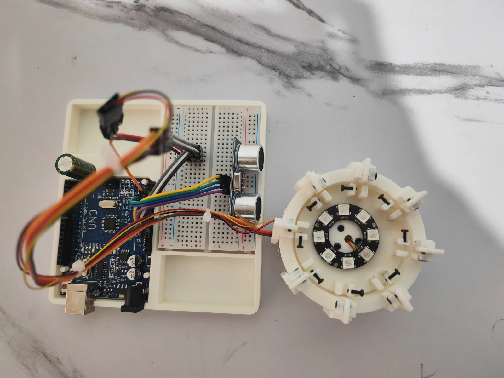
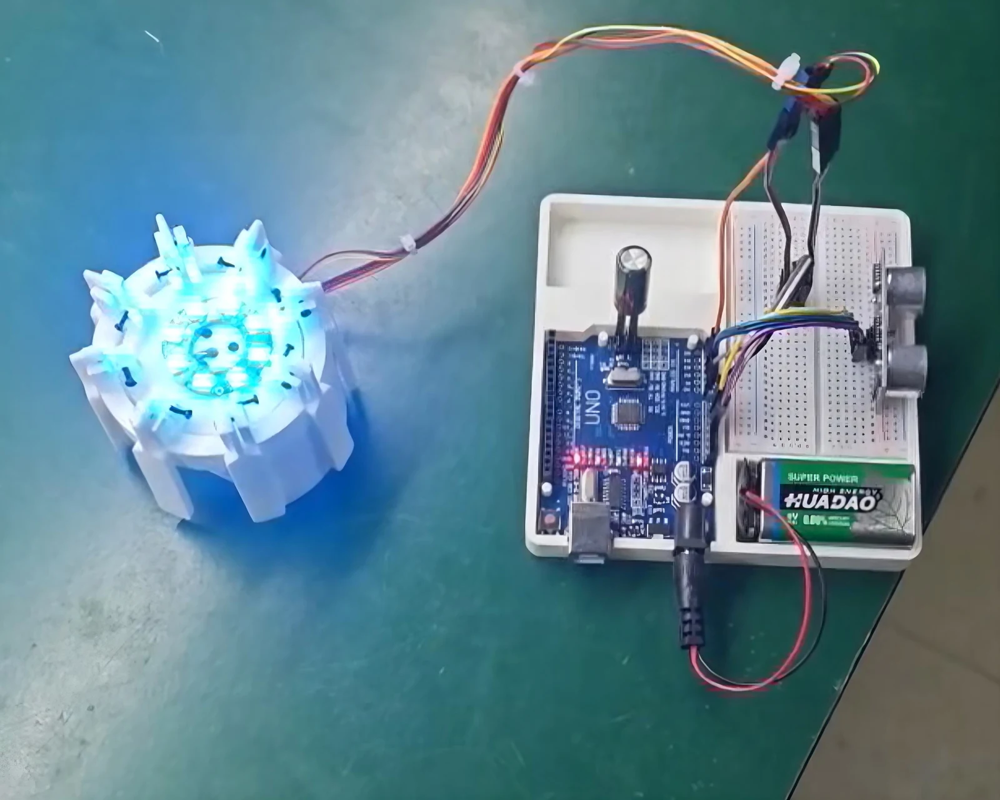
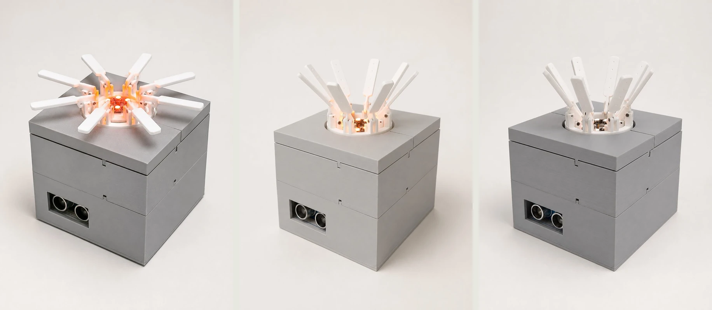
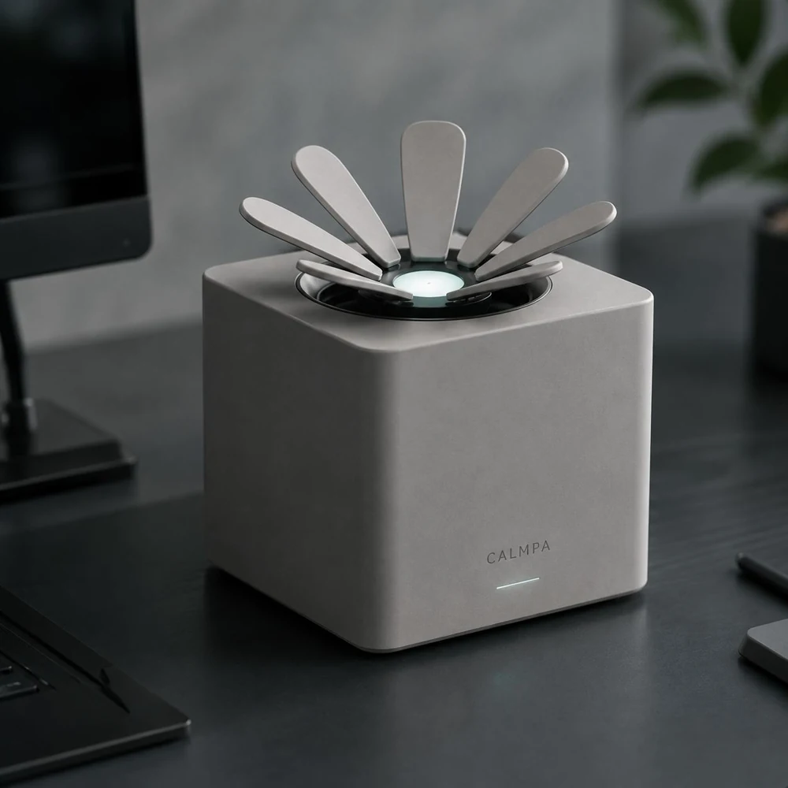

Petals, rather than a numerical display.
Opening and closing express a gradual change without requiring the user to read a score. Organic curves became repeated linear arms with hinges and linkages.
CALMPA — PAUSE GENTLY
A quiet desktop companion that makes time spent sitting visible through slow, physical change.
Experience the idea Explore the projectOriginal PDFs · Full report (42 pages) & final poster (3 sheets)

01 / PHYSICAL INTERACTIONSENSE → MOVE → NOTICETHE IDEA IN ONE SENTENCE
As desk work continues, the petals slowly close.
When you step away, they open again.
Designed for people who spend long, focused stretches at a desk.
Report §§1–4, 6The project began with a perception problem: time spent sitting can accumulate without being noticed.
During screen-based work, attention stays with the task. Stiffness, fatigue and the need to move may only become apparent later. Another notification can compete with that same attention.
Calmpa asks whether a physical object at the edge of vision could make this gradual change easier to notice, while leaving the decision to take a break with the person.
Translate an invisible duration into a visible change in form.
Use gradual movement instead of alarms, pop-ups or vibration.
Keep sensing unobtrusive and the object familiar on a desk.
The report reviews sedentary work, body awareness and calm technology, alongside case studies of Microsoft Viva Insights and The Calm Office. These informed the design direction; they are not evaluations of Calmpa.
Brainstorming, a system map, stakeholder analysis, a moodboard and two design personas translated the problem into requirements. The personas describe intended users; the report does not document interviews or a participant study.
Report §§2–6 · Literature and design synthesis, not primary user findings.
The flower offered a legible metaphor for accumulation and recovery. The design work was to turn that gesture into a buildable, repeatable movement.

Opening and closing express a gradual change without requiring the user to read a score. Organic curves became repeated linear arms with hinges and linkages.
The cubic housing contains the electronics; a circular opening gives the radial mechanism room to move. Front-mounted sensing reduces exposed components.
Functional observations compared fast, medium and slow motion. Faster motion appeared abrupt; a gentler pace became the direction for refinement.
Design decisions: report §§8.1–8.4. Motion observations: §§9.2.3, 10.2.
Explore the documented presence–movement loop. The device estimates time at the desk through proximity sensing; it does not measure fatigue or diagnose posture.
At the start of a work session, the petals are open. Continued presence at the desk gradually closes them.
An explanatory web simulation, not a live device connection. Timing and geometry are illustrative: the report does not specify thresholds, calibrated durations or servo angles. Motion only; no unsupported light-to-state mapping is added.
01Sense presence An ultrasonic sensor estimates whether someone is in front of the desk device.
02Express duration Continued desk presence is represented by petals gradually closing.
03Reset with a break Leaving the desk resets the sitting duration and lets the petals reopen.
Interaction logic: report §§9.2.2, 11.1.3; poster, sheet 2.
The prototype connects sensing to control and control to movement. Its visible mechanism makes the core interaction tangible and testable.



The making photographs document the physical build, including illumination. The report defines the presence–petal loop, but does not establish a reproducible lighting sequence or a lighting component specification.
The result is a functional proof of concept. Whether this gentle cue supports break-taking over time remains a question for user research.

WHAT WAS EVALUATED
The prototype was placed on a desk; distance to the sensor and motion speed were varied. The report records qualitative observations, without a participant sample or measured effect on sitting time.
Read the technical excerptInput responded within an effective range. Distance, angle and surrounding objects affected reliability.
The mechanism opened and closed. Servo calibration still needs improvement for smoother motion.
Slower movement appeared gentler. Perceived interruption needs user validation, and the enclosure remains larger than desired.
Reported outcomes and limitations: report §§10.1–10.3. Next steps follow these documented limitations.

LOOKING BEYOND THE PROTOTYPE
The exhibition poster explores smoother surfaces, concealed components and a more integrated presence on the desk.
This image represents a future product direction. The working prototype shown throughout this case study is the evidence of implementation.
PRODUCT VISION / NOT A BUILT FINAL PRODUCTBoyang Wan 万博扬
Individual undergraduate final-year project
Industrial Design · SUSTech · 2026
My work connects the framing of the problem with the design and realisation of a physical interaction.
Developed under the supervision of Li Xueliang. Authorship follows the individual thesis and project credits; the supplied materials do not identify a separate project team or allocate component-level assistance.
The full original report and final poster are available above in the project introduction. These additional excerpts focus on the design and prototype; their administrative and personal pages are omitted.